Escolas conscientes
Frugal ChicA arte de investir em cuidados estéticos sem exagerar
Uma filosofia de cuidado com propósito: menos excessos, mais clareza, segurança e escolas que respeitam a sua rotina.
Leia o artigoSaúde da pele · Tecnologia · Cuidado consciente
Perspectivas claras sobre saúde da pele, tratamentos estéticos, prevenção, recuperação, cuidados com o coro cabeludo e Plano cuidado.

Diretor do Artigo.
Resultados, cuidados, indicação, segurança e naturalidade explicadas a partir da avaliação do seu rosto e da sua expressão.
Leia o artigo principal.Consulta e cuidado
Estes artigos explicam por que simplificar, observar e avaliar com atenção pode ser mais útil do que acrescentar imaginavelmente outro tratamento ou produto.
Escolas conscientes
Uma filosofia de cuidado com propósito: menos excessos, mais clareza, segurança e escolas que respeitam a sua rotina.
Leia o artigo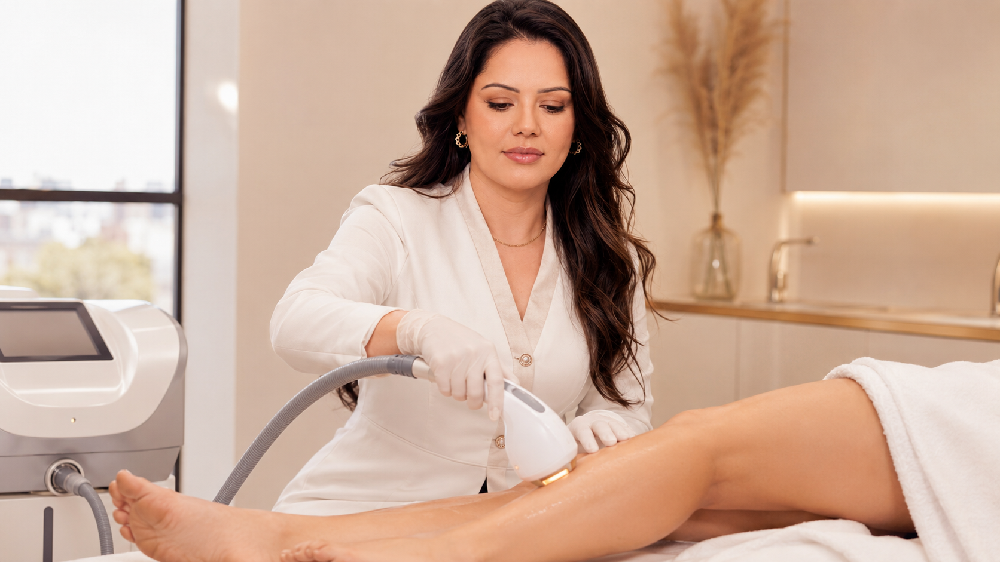
Consulta e cuidado
Um bom plano começa antes da escola de um aparelho: com histórico, prioridades, indicação e expectativas realistas.
Leia o artigo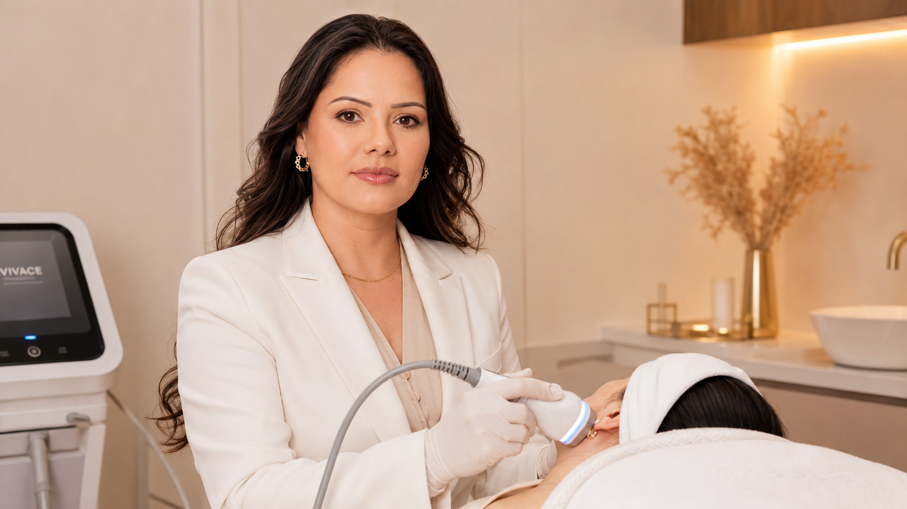
Consulta e cuidado
Como reconhecer uma barreira cutânea sobrecarregada, simplificar uma rotação excessiva e restaurar a tolerancia antes de acrescentar atos ou procedimentos.
Leia o artigo
Consulta e cuidado
O que uma limpeza profissional cuidada pode esclarecer, quantas obstruções podem ser tratadas com segurança e por que mais pressão significa melhor cuidado.
Leia o artigoSaúde da pele
Cor, textura e vermelho podem parecer enganosamente simples. Um plano responsável começa pela compreensão do padre, do histórico e das possíveis causas.
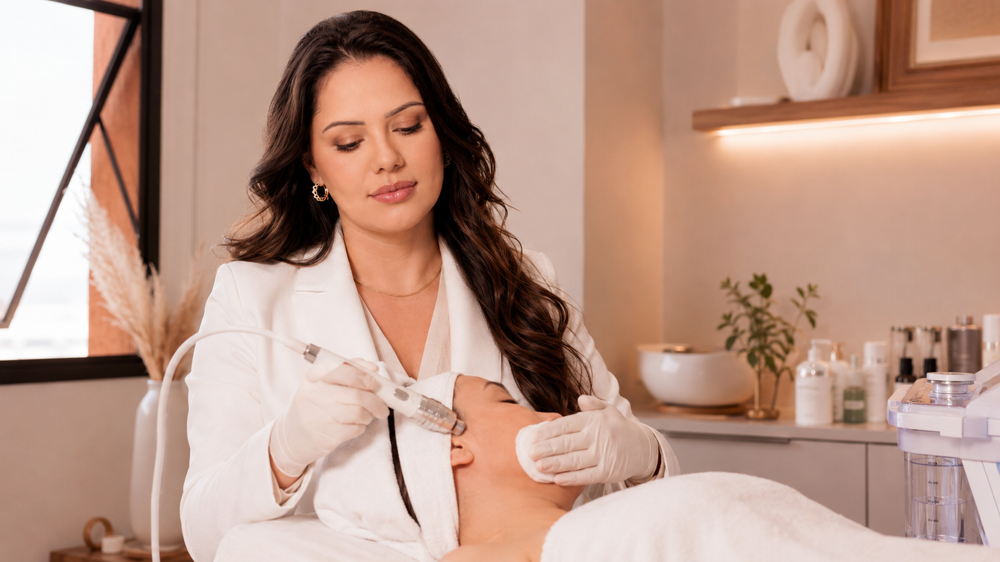
Saúde da pele
A pigmentação tem almofadas, gatilhos e memória. Entenda por que a cor precisa ser avaliada antes de escola como, ou se, deve ser tratada.
Leia o artigoNotas clínicas
Cicatrizes de acne e vermelho persistente exigem avaliação precisa. Apenas o nome de um aparelho não explica o que devo contar.
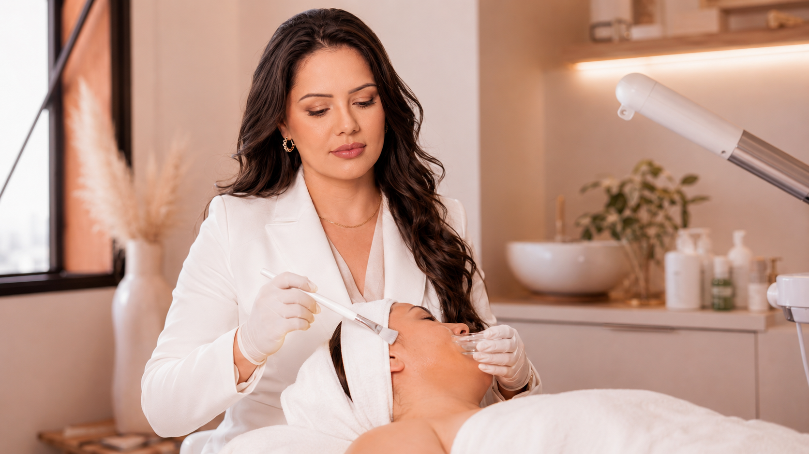
Saúde da pele
Cicatrizes de acne variam em profundidade, formato e cor. Entenda por que a textura customa exigir um tratamento gradual e em camadas, não um único aparelho universal.
Leia o artigoLaser e tecnologia
Vermelho persistente não é um único diagnóstico. Um guia cuidado sobre vasos, inflamação, laser e luz — e sobre quando a avaliação médica deve vir primeiro.
Leia o artigoCabelo e coro cabeludo
O afinamento capilar pode ser profundo pesoal. Um primeiro passo responsável é compreender o que está mudando e quando uma investigação médica pode ser necessária.
10 · Cabelo e couro cabeludo
Queda, afinamento e quebra exígem respostas diferentes. Um guia orientado pela causa sobre avaliação do couro cabeludo, encaminhamento e apoio realista de procedimentos.
Leia o artigo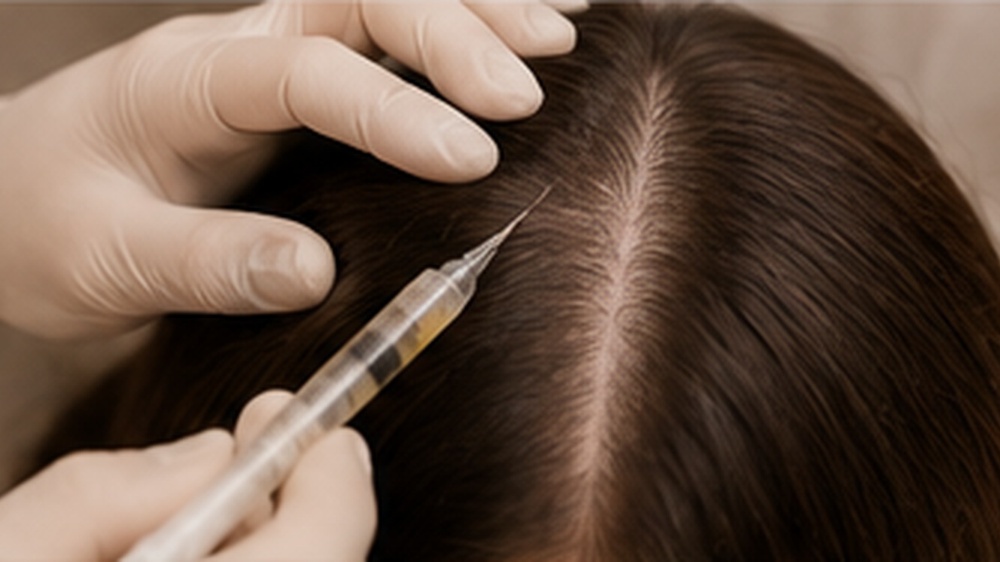
Mais artigos · 11–60
A mesma edição segue daqui: novos temas, a mesma leitura cuidada, com imagem relacionada e acesso direto a cada guia.
Saúde da pele
Proteção solar depende de contexto, reaplicação possível e uma rotina que você realmente consegue manter.
Leia o artigoSaúde da pele
Ardor, repuxamento e descamação apenas contexto antes de trocar ou somar produtos.
Leia o artigoSaúde da pele
Entenda por que combinar ativos sem orientação pode aumentar irritações e manchas.
Leia o artigoSaúde da pele
Higienização demais também pode comprometer conforto e tolerância da pele.
Leia o artigoSaúde da pele
Uma rota de remoção e observação ajudou a conversar sobre desconforto com mais Clareza.
Leia o artigo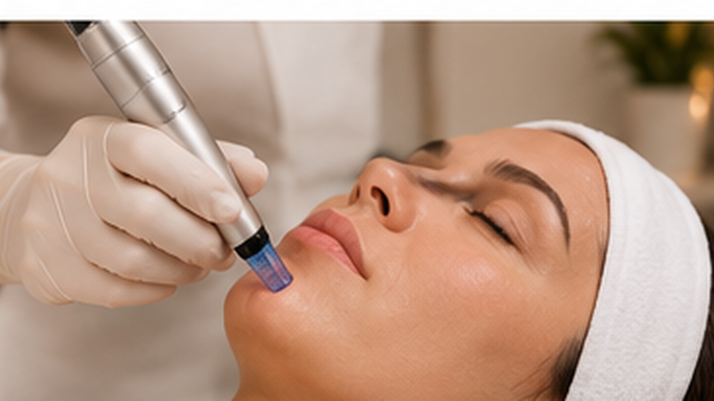
Textura e cicatrizes
Iluminação, oleosidade e textura mudam a percepção dos poros; o plano precisa ser honesto.
Leia o artigoSaúde da pele
Entenda limites da manipulação e por que a técnica importa para proteger a barreira cutânea.
Leia o artigo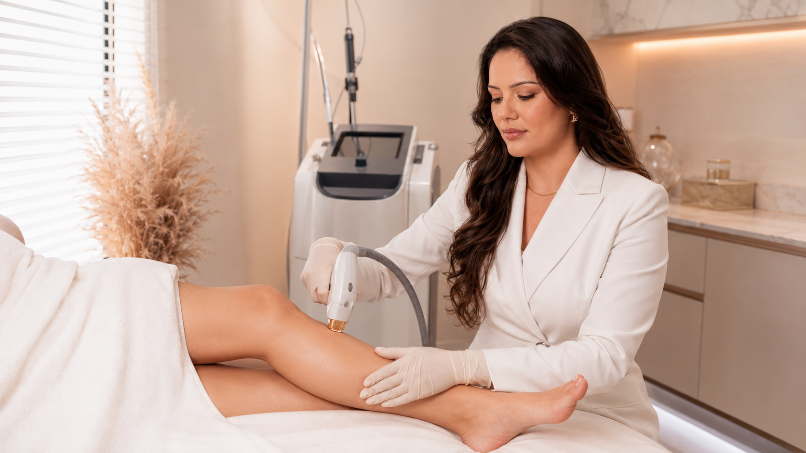
Textura e cicatrizes
Cicatriz e acne inflamada exigem pernas diferentes, controlando a capacidade de vir primeiro.
Leia o artigo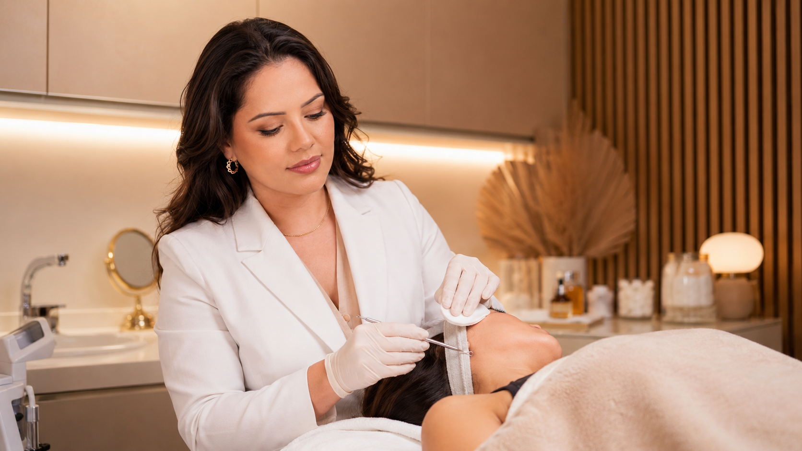
Textura e cicatrizes
Cor e relevo respondem a um mecanismo diferente, por isso preciso de expectativas diferentes.
Leia o artigo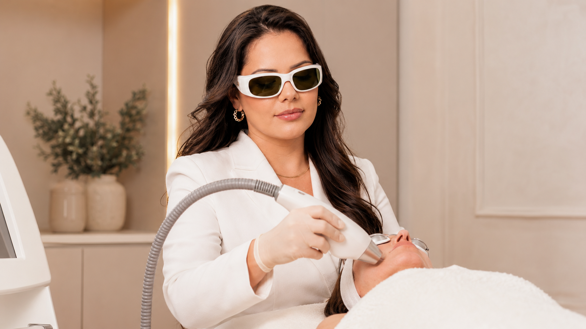
Saúde da pele
Calor, ardor e vasos aparentes podem ter origens diferentes e não devem receber um rótulo rápido.
Leia o artigoPigmentação
Pigmentação pode ser influenciada por exposição e inflamação; consistência é mais útil que promessas.
Leia o artigoPigmentação
Irritação, acne e trauma podem deixar cor residual; evitar novas agressões é parte do cuidado.
Leia o artigoSaúde da pele
Mudanças hormonais podem mexer com pigmentação e sensibilidade; a conversa precisa incluir contexto de saúde.
Leia o artigoRenovação da pele
A mesma substância pode ter efeitos muito diferentes conforme veículo, pele, área e preparo.
Leia o artigoRenovação da pele
Fricção pode ser desconfortável para algumas pedras e não mede a qualidade de uma rotina.
Leia o artigo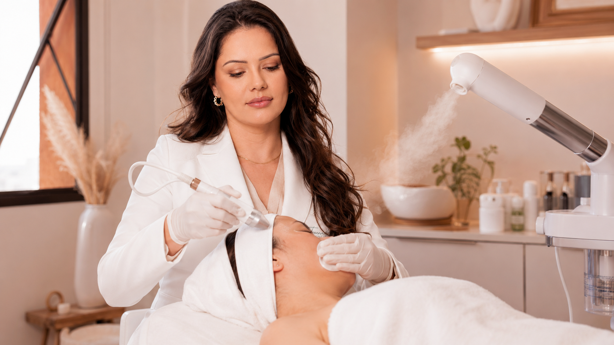
Renovação da pele
A técnica pode ter espaço em planos selecionados, sem prometer corrigir toda alteração de textura.
Leia o artigoRenovação da pele
A escola de uma renovação mecânica deve considerar sensibilidade, objetivo e recuperação.
Leia o artigo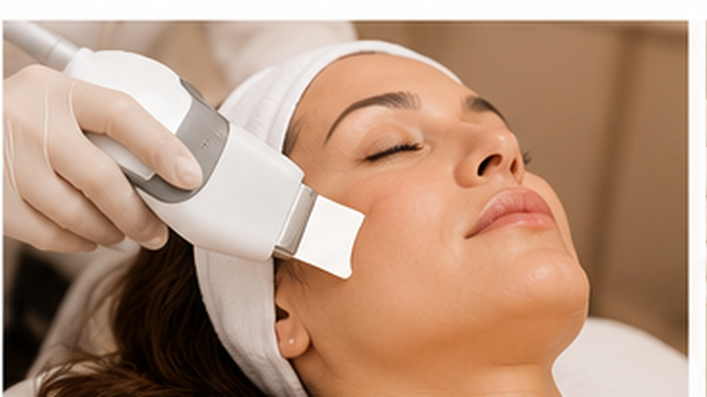
Renovação da pele
Tecnologia não substitui diagnóstica; ela ganha sentido quando há uma queixa e uma pela avaliadas.
Leia o artigo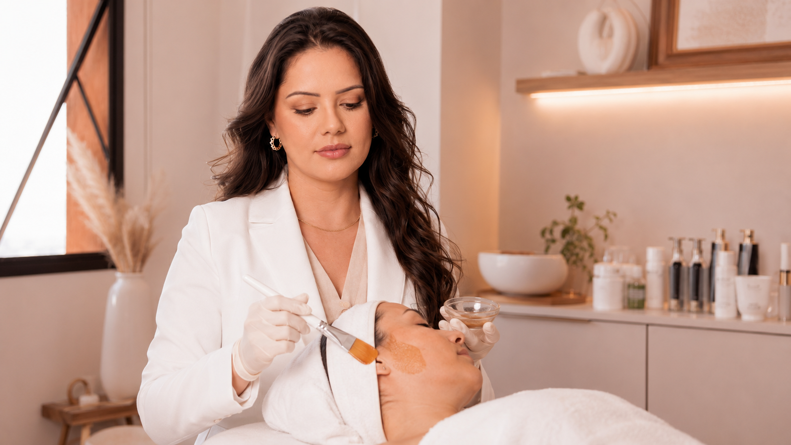
Renovação da pele
Descamação e sensibilidade variam; informam produtos, sol e compromissos evita decisões apressadas.
Leia o artigoRenovação da pele
A experiência não é igual para todas as pessoas; preparação e pigmentação influenciam a decisão.
Leia o artigoLaser e tecnologia
Exposição solar recente pode mudar a indicação e aumentar o risco de resposta irregular.
Leia o artigoLaser e tecnologia
Pelos feitos podem ter um comportamento particular; histórico e expectativa ajudam a planar com honestidade.
Leia o artigoLaser e tecnologia
Sessões não são repetidas por ansiedade; o tempo entre elas conversa com biologia e segurança.
Leia o artigoLaser e recuperação
A recuperação tem variabilidade, compromissos, sol e tolerância precisa estar na conversa antes.
Leia o artigoLaser e recuperação
Pele em recuperação física simples e específicas, especialmente em relação a luz e calor.
Leia o artigoTextura e cicatrizes
Textura, cor, atividade da acne e risco de manchas definem pernas antes de qualquer aparelho.
Leia o artigoLaser e tecnologia
Luz e laser não são sinônimos; a escola depende de alvo, pela e possibilidade de cuidado posterior.
Leia o artigoLaser e tecnologia
Estímulos graduais não devem ser apresentados como transformação instantânea; o plano considera resposta e etapas.
Leia o artigo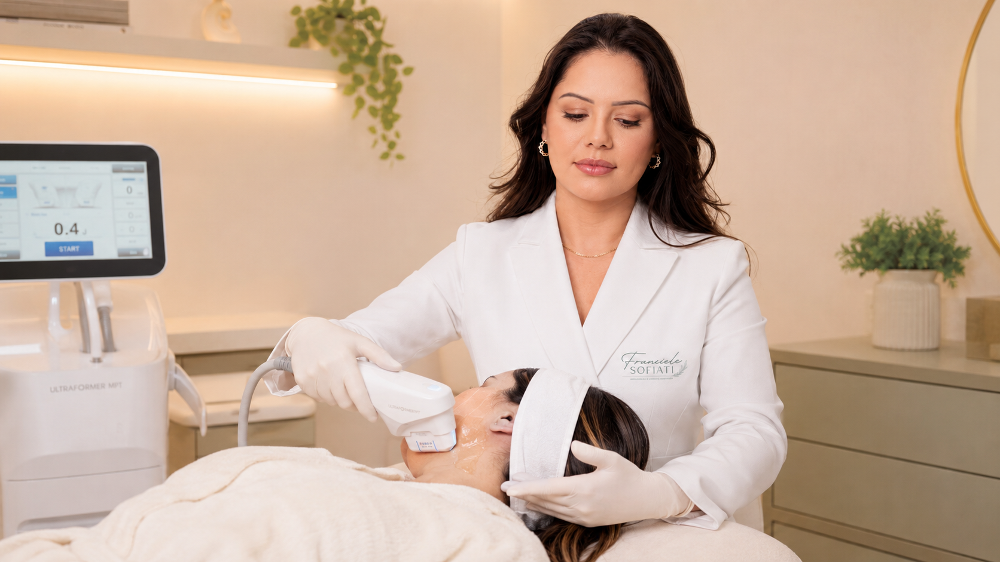
Laser e tecnologia
Ultrassom microfocado é uma tecnologia, não uma promessa única; anatomia e expectativa orientam a conversa.
Leia o artigo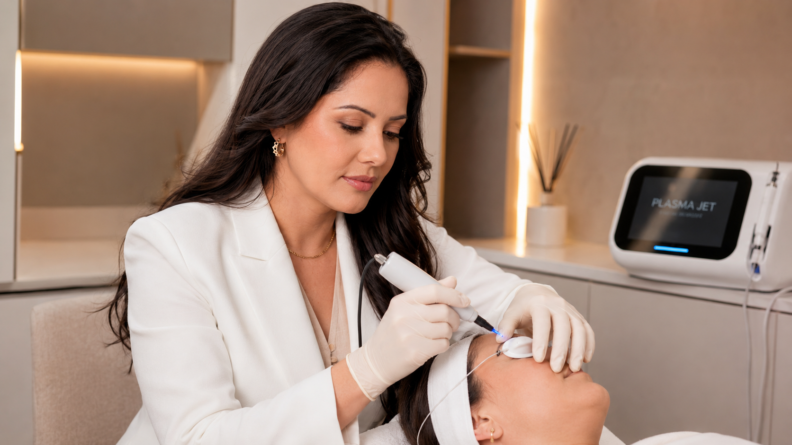
Laser e tecnologia
A pele precisa estar em condições adaptadas e a recuperação precisa caber na rotina antes da decisão.
Leia o artigo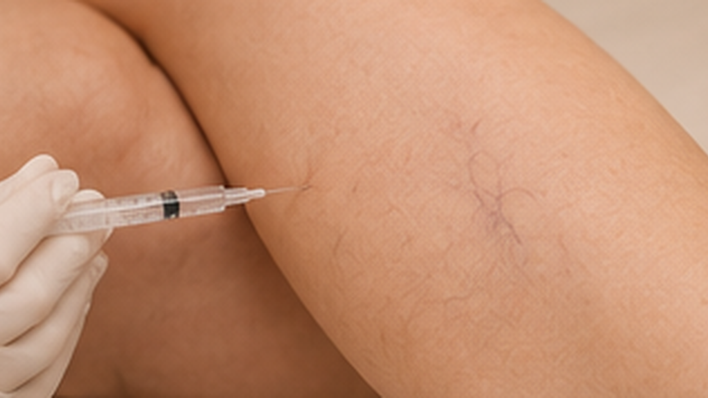
Vasos e circulação
Vasinhos estéticos podem coexistir com questões que pedem outra investigação; a conversa começa por isso.
Leia o artigoVasos e circulação
Histórico, medicamentos, gestação e alterações circulatórias necessárias para entrar na consulta.
Leia o artigo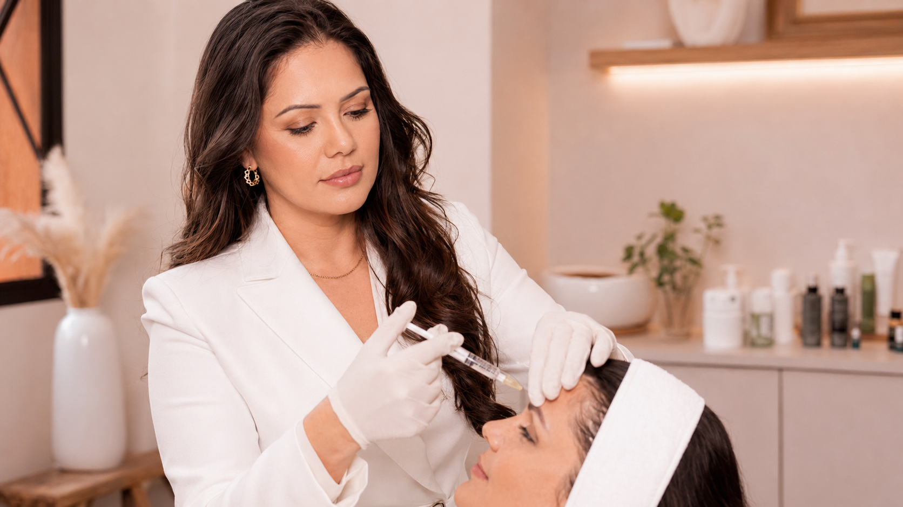
Planejamento facial
Uma conversa de qualidade observa expressão e objetivos antes de falar em pontos ou doses.
Leia o artigoPlanejamento facial
O rosto já pode ser diferente dos nativos; a avaliação busca entender o que é possível e desejável suavizar.
Leia o artigo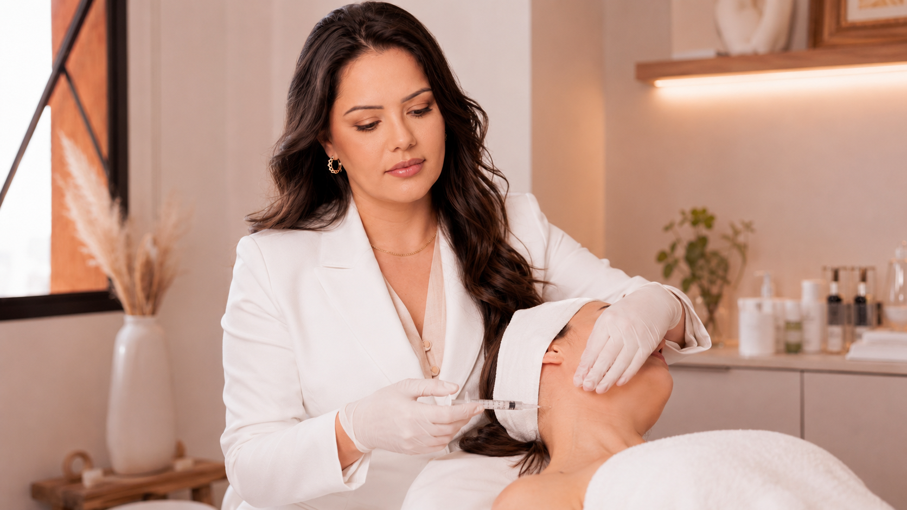
Planejamento facial
Mandíbula, queixo, pescoço e expressão exigem leitura individual antes de qualquer plano.
Leia o artigo
Planejamento facial
Uma estética coerente com a pessoa começa ao explicar o que ela deseja preservar.
Leia o artigoTextura e cicatrizes
Procedimentos que estimam a resposta ao histórico de manchas e à recuperação.
Leia o artigoTextura e cicatrizes
A integridade da pele e a atividade inflamatória são decisivas antes de qualquer estilo.
Leia o artigoCabelo e coro cabeludo
Queda súbita, onde estão localizadas ou sinomas no coro cabeludo pode exigir investigação médica.
Leia o artigoCabelo e coro cabeludo
Luz, penteado e Ângulo alternam imagens; registros consistentes ajudam mais que comparações isoladas.
Leia o artigo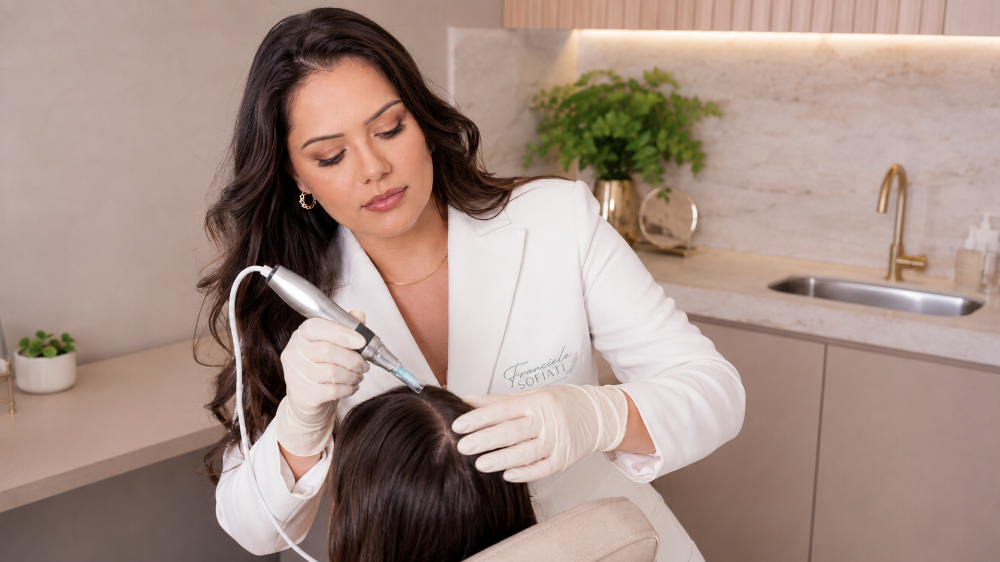
Cabelo e coro cabeludo
Microinfusão exige objetivo claro, por exemplo, e uma conversa responsável sobre causa e acompanhamento.
Leia o artigoCabelo e coro cabeludo
Afinamento tem origens diferentes; plano, expectativa e acompanhamento preciso respeitar essa diferença.
Leia o artigoConsulta e cuidado
Histórico, roteiro e prioridades julgam mais que escolher um processo antes de ser avaliada.
Leia o artigoConsulta e cuidado
Entender indicação, preparação, limites, recuperação e contato pós-procedimento fortaleza uma decisão autónoma.
Leia o artigoRECUPERAÇÃO E SEGURANÇA
Cada protocolo tem evolução própria, mas dor intensa, bolas ou piora progressiva simples orientação.
Leia o artigoRECUPERAÇÃO E SEGURANÇA
Radiação e calor podem alterar a tolerância e risco de manchas antes e depois de procedimentos.
Leia o artigoConsulta e cuidado
Luz, ângulo, expressão, tempo e seleção de casos mudam a leitura de qualquer resultado.
Leia o artigoConsulta e cuidado
Imagens, mensagens e informações de saúde apenas discriminação, finalidade clara e escola da paciência.
Leia o artigoSaúde da pele
Quanto a pele reage, reduzir variáveis que ajudam a observar e conversar com mais segurança.
Leia o artigoConsulta e cuidado
Pele, colageno, pelo e coro cabeludo tem ritmos; um bom plano explicita intervalos e reavaliações.
Leia o artigo
Uma mensagem de Franciele
Estes artigos oferecem um contexto útil, mas não conseguem avaliar sua culpa nem confirmar uma indicação. Leve suas mãos à consulta caso queira uma orientação que considere seu histórico e suas prioridades.
Leituras em português
Laser e tecnologia
Pigmentação
Textura e cicatrizes
Laser e recuperação
Tecnologia e cuidados
Couro cabeludo
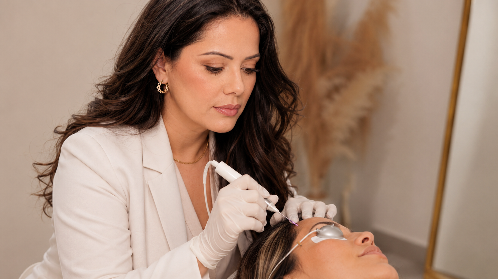
Renovação da pele
Planejamento facial